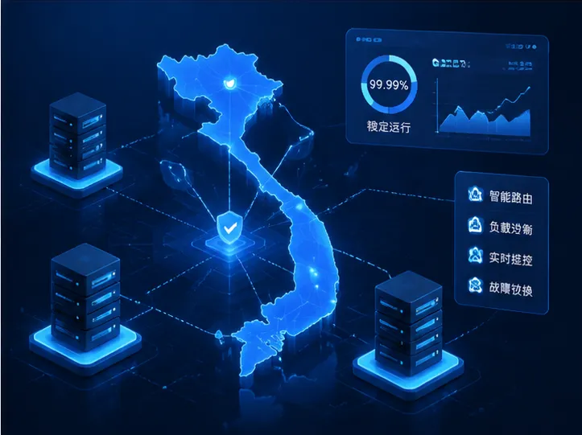
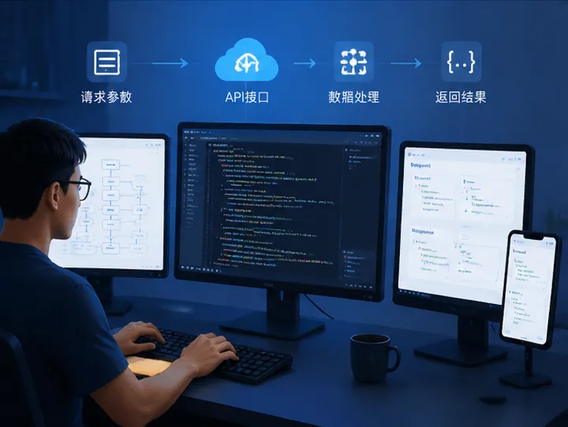

专业越南支付API及本地支付通道服务
随着越南数字经济和线上消费市场快速发展，越来越多跨境企业、互联网平台以及海外商户需要稳定可靠的越南支付能力，实现本地用户付款、订单交易以及资金处理。
UKPay提供专业越南支付API接口和支付通道解决方案，通过技术接口连接越南本地支付资源，帮助企业快速完成支付系统接入，提高交易效率。
我们支持企业根据自身业务需求选择合适的支付方式，包括线上收款、订单支付、资金处理以及越南代收代付服务，打造完整的本地化支付体系。
越南支付API与支付通道核心优势

API快速接入
提供标准化支付API接口，支持订单创建、支付请求、状态回调等功能，降低企业开发成本。

稳定支付通道
通过稳定的支付架构和交易优化机制，提高支付成功率，保障企业业务持续运行。
越南本地支付支持
深入了解越南支付环境，为企业提供符合当地市场需求的支付解决方案。
越南支付API支持多种本地支付方式
UKPay越南支付接口支持多种线上支付场景，帮助企业覆盖越南用户常用付款方式，包括：
- 越南本地银行卡支付，满足用户线上付款需求
- 越南二维码支付，提高支付便利性
- 电子钱包支付，连接当地移动支付生态
- 企业批量付款及代付业务处理
- 跨境企业资金收取及订单支付管理



越南支付通道适用行业
越南支付API和支付通道服务适用于多个行业场景，帮助企业解决进入越南市场后的本地收款和支付问题。
游戏支付
跨境电商
数字服务
企业贸易
如何接入越南支付API接口？
企业只需要提供业务模式、交易需求以及系统环境，我们将根据实际情况推荐合适的越南支付方案。
通过API接口对接、技术测试、支付配置及上线支持，帮助企业快速完成越南支付系统接入，实现稳定运营。